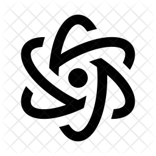

Introducere
I. Oscilaţii şi unde mecanice
A. Oscilatorul mecanic
Fenomene periodice şi oscilaţii mecanice
Mărimi caracteristice mişcării oscilatorii
Amortizarea oscilaţiilor
Analiza mişcării oscilatorii
Modelul oscilatorului armonic
Mişcarea oscilatorie armonică
Energia oscilatorului armonic
Pendulul elastic
Pendulul gravitaţional
Compunerea oscilaţiilor
*Compunerea oscilaţiilor perpendiculare
Alte provocări
B. Oscilatori mecanici cuplaţi
Oscilatori mecanici cuplaţi
Oscilaţii mecanice forţate
Rezonanţa
Oscilaţii întreţinute
Oscilaţii autoîntreţinute
Alte provocări
C. Unde mecanice
Propagarea unei perturbaţii
Modelul undei plane
Reflexia undelor mecanice
Principiul lui Huygens
Refracţia undelor mecanice
Unde seismice
Protecţie antiseismică
Interferenţa undelor mecanice
Unde staţionare
*Difracţia undelor mecanice
Alte provocări
D. Acustica
Caracteristicile sunetului
Perceperea sunetelor
Instrumente muzicale
Combaterea poluării sonore
Infrasunete şi ultrasunete
Alte provocări
II. Oscilaţii şi unde electromagnetice
A. Circuite de curent alternativ
B. Oscilaţii electromagnetice libere
C. Unde electromagnetice
II. Optica ondulatorie
A. Dispersia luminii
B. Interferenţa luminii
C. Difracţia luminii
D. Polarizarea luminii
IV. Elemente de teoria haosului
